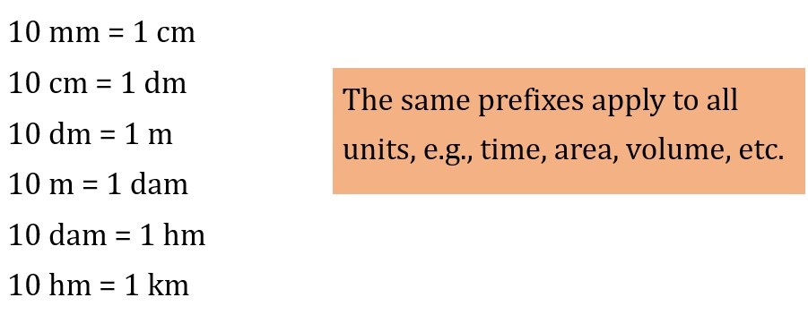
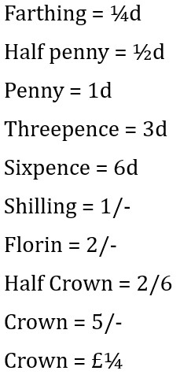
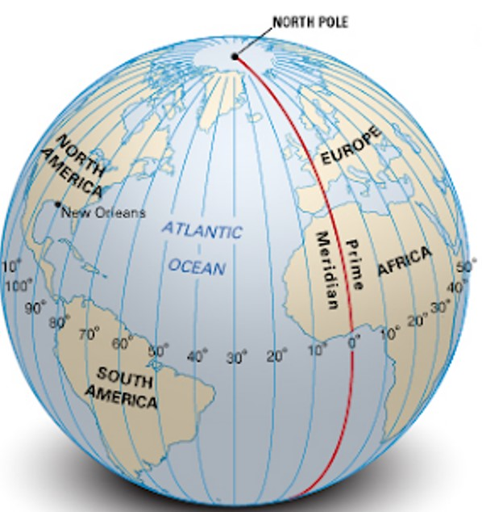
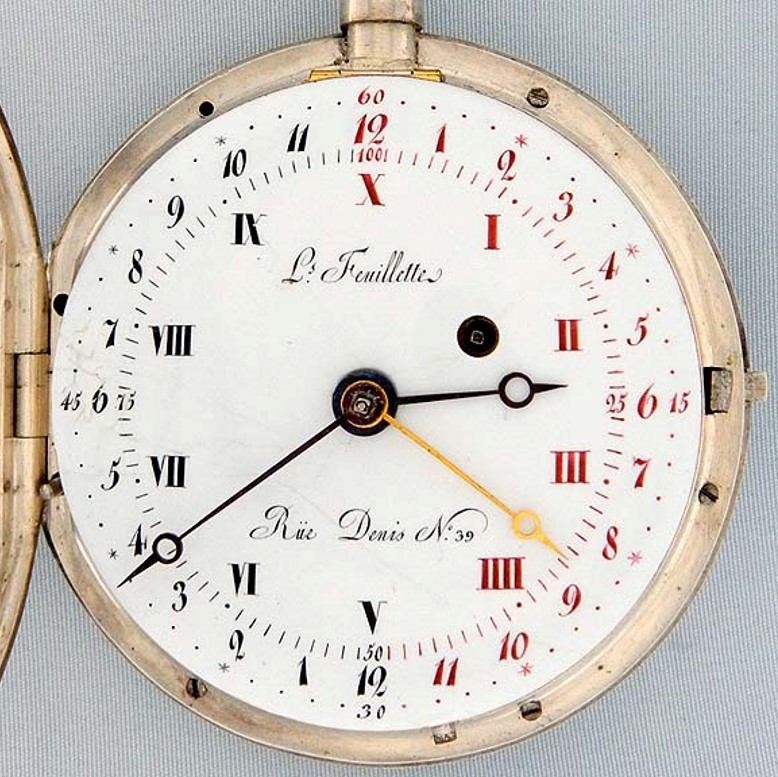

3 The Metric System
“There is madness in not striving to reduce the gap between rich and poor. This gap is more dangerous than nuclear bombs. When people do not have enough to eat, and this will soon be the case of eight out of ten human beings, their revolt can prove impossible to check. Developed countries have to be very attentive to the plight of poor countries.”
– President François Mitterrand, 1989
The metric system is a universal system of measurements that strives to bring order and reason to the exchange of goods and information.
Such a system is important as it represents fair exchanges with exactness (hence why the scale is often a symbol of justice).
3.1 Decimal Division

All measurements are divided decimally, hence making calculations easier in the metric system.
Yet, imperial units (e.g., BTU, miles, horsepower, etc.) are still widely used in certain industries.
3.1.1 Currency
Pre-decimal British currency was difficult to remember. In those days:
- 1 shilling = 12 pennies
- 1 pound = 20 shillings (or 240 pennies)
Prices would be writen in shillings and pounds - for instance, an item that costs nine pounds and four shillings might be marked as “9/4” in shops or written as “9s 4d”.

The “s” was Latin for solidus and the “d” Latin for denarius.
On February 15, 1971, both the United Kingdom and Ireland decimalized their currencies. The shilling was abandoned and the pound subdivided into a hundred “new pence” with the symbol “p”. February 15 was also known as decimal day.
3.1.2 Arabic Numerals
These numerals were common in 1500; in 1585, Flemish mathematician Simon Stevin showed how fractions could be explained with Arabic numerals using a decimal point method called “De Thiende”.
“De Thiende” was translated into
3.1.3 Spreading of Metric System
In 1656, Robert Wood suggested that the pound sterling be divided into what he called “tenths, hunds and thous”.
Gabrile Mouton - a Parish priest with a good working knowledge of astronomy and mathematics proposed the following units based on the size of the Earth:
mille
This was the length of a minute.
geometric foot
This was a thousandth of a mile.
3.2 Pre-French Revolution
Bad harvests in 1787 and 1788 led to riots in Rennes, Besançon, Orléans, Lyon, Aix-en-Provence, and Marseille (i.e., all cities in France).
People were ransacking shops, assaulting merchants, hijacking convoys, and also tearing down barriers. Furious mobs also destroyed 40 customs post in the 18-mile wall surrounding Paris.
Because of this, France was bankrupt - the king didn’t know what to do and debts rose in England’s favor.
3.2.1 8 August, 1788
King Louis XVI summoned the Estate General - something that hadn’t been done in 175 years (i.e., not since 1614).. The Estate General represents the three general orders of French society: clergy, nobility, and commoners.
There only about 500000 clergy and nobility in the Estate General and about 27 million commoners.
Nonetheless, Louis XVI ordered the Estate Geneal to form a cahiers de doléances, a notebook of grievances. One of the items was a reform of weights and measures.
3.2.2 Formation of the National Assembly
On June 17, 1789, the deputies of the third estate (i.e., the nation) were locked out of the meeting hall at Versailles. They thought that that was Louis XVI’s way of forcing them to disband.
Instead, the deputies had a meeting at a nearby tennis court - they swore to never disband until France had a written constitution.
3.2.3 14 July, 1789
Louis XVI let his finance minister Jacques Necker go. Necker was sympathetic to the third estate and was hailed as a reformer by the people.
On the same day, a large crowd bursted into the Invalides (i.e., old soldiers’ home and weapons depot) and carried 30,000 muskets and fire cannons. They also raided the bastille for gunpowder - by the end, the Invalides was theirs (with about 170 casualties).
3.2.4 5 and 6 October, 1789
A crowd of women (i.e., fishwives, stallkeepers, harlots, and seamstresses) marched towards the Versailles with weapons (e.g., cudgels, scythes, etc.) and demanded bread.
On the next morning, they found an open side gate and burst into the palace. With the heads of two guards impaled on a spike, they escorted the royal family to Paris and left them in the Tuileres Palace.
3.2.5 21 June , 1791
Louis XVI and Marie Antoinette slipped out of the Tuileres in servants’ disguise for a 200-mile dash to Austrian territory (that was overseen by Marie’s brother). However, a postmaster identified Louis and the couple was arrested and bought back to Paris. Both people were found guilty of treason.
On 21 September, 1792, the monarchy was abolished.
Louis XVI was beheaded on 21 January, 1793 - his body was dumped in an anonymous grave.
Marie Antoinette was beheaded on 16 October, 1793; her body was taken to a graveyard behind the Church of Medeline. However, the gravediggers were on a lunch break.
This opportunity gave Marie Groscholtz (later known as Madame Tussaud) enough time to make a was figure of her face.
3.2.6 France’s Measurement Situation
“Contemporaries estimated that under the cover of some eight hundred names, ancient regime France contained a staggering 250,000 different units of weights and measures.”
– Alder, 2002, p. 3
Many quantities were named as such because of their origins from human needs and interests.
The Greeks and Romans used fingers as a base measurement - a “foot”’s length is about the same as a human foot. The cubit foot was about as long as an arm’s bend at the elbow to the tip of the middle finger. Because of this, the following measurements were fashioned:
- 1 foot = 16 fingers
- 1 cubit = 24 fingers
Anthropometric measures also reflected the amount of labor that a person could do in one sitting. Coal was measured in charge and was equivalent to about \(\frac{1}{12}\) of a miner’s daily output. Arable land was measured in “homme” or “journee” to estimate the amount of land that a peasant might be able to plough in a day.
3.3 Implications of the Metric System
There were many different kinds of implications (to different disciplines) when the metric system was introduced.
3.3.1 Religious Implications
“You shall do no unrighteousness in judgment regarding measures in length, weight, or quantity. You shall have honest balances, honest weights, an honest ephah, and an honest hin: I am the LORD your God, who brought you out of the land of Egypt.”
– Leviticus, 19:35-36
3.3.2 Scientific Implications
Scientists argued that such a system should also proclaim universal measures (just as how the French revolution would also proclaim universal rights for all).
Scientists also derived the fundamental unit from the measure of the word itself.
3.3.2.1 Fundamental Unit
The “unit of length” was defined as one ten-millionth of the distance along the meridian through Paris from the North Pole to the Equator.
The “meter” would be eternal as it was taken from the Earth itself (which was believed to be eternal). It was also equally belong to all people of the world as the Earth also belonged to each individual equally.
An alternative idea was that a fundamental unit of length could also be derived from the length of a pendulum beating one second. This was an idea that dated back to the 17th century when Galileo demonstrated that the period of a pendulum’s beat was determined by its length.
However, the length of a one-second pendulum was also sensitive to the latitude at which it was measured, because gravity varied slightly with latitude. The equator may have been a suitable choice, but it was also quite remote from scientific nations; hence, the second most natural location would be 45\(^\circ\) of north latitude - at the outskirts of Bordeaux in south-west France. However, the idea did not meet with international approval.
3.3.2.1.1 Refinements to the System
Auguste-Savinien Leblond - a French mathematician - coined the word “meter” (which came from the Greek word “metron”) for the fundamental unit of length.
Greek prefixes were used for multiple measures of the meter and Latin prefixes for submultiples. This idea was proposed by Claude Antoine Prieur.
For a brief period of time, these prefixes scared people, so they were replaced with ordinary names (e.g., “decimeter” would used to be called a palme).
3.3.3 Meridian Expedition

The meridian is an imaginary north-south line on the Earth’s surface that connects both geographic poles. It is used to indicate longitude.
In June 1792, two astronomers - Jean-Baptiste-Joseph Delambre and Pierre-François-André Méchain - went in opposite directions from Paris to measure a piece of the meridian arc that ran from Dunkirk to Barcelona through Paris.
They did this to establish a common standard of measure that people of all sorts could use it.
3.3.3.1 Geodesy
Geodesy is the science of measuring and understanding Earth’s properties - its shape, its gravity, its orientation in space - as well as how these properties change over time.
Via GPS, many geodesists can measure the movement of a site 24 hours per day, seven days a week.
Geodesy on a smaller scale is called surveying.
3.3.4 Standard for Mass
Antoine Lavoisier and the crystallographer René-Just Haüy worked on the grave - the kilogram as it was previously called - as a cubic decimeter of rainwater weighed in a vacuum at the melting point of ice (i.e., 0\(^\circ\)C).
In 1799, the chemist Lefèvre-Gineau would define the “gram” as a cubic centimeter of rainwater in a vacuum at the temperature of maximum density.
3.3.5 First International Scientific Conference
Two months before Méchain and Delambre finished their measurements, foreign representatives arrived in Paris to attend the Congress on Definitive Metric Standards. This happened on 28 November 1798.
The instruments used for the preliminary work was inspected and tested in field observations. The representatives were asked to propagate the new system in their own countries.
3.3.5.1 Adopting the Meter
When the meter was introduced in France, it caused confusion. The system disrupted norms and opened local markets to outside competitions. Even physicians were afraid that they would have to re-learn all their dosages.
Napoleon Bonaparte refused to learn the system - he insisted that the weights he got be restated in poids de marc (i.e., old-style pounds) as he could not “think” in the new units.
Eventually, a legislation passed in 1873 that would mandate the metric system mandatory throughout France and its colones from 1840 onwards.
3.3.6 World Metrology Day
The meter convention was signed on 20 May, 1875 by representatives from the following nations:
- Argentina
- Austria
- Belgium
- Brazil
- Denmark
- France
- Germany
- Italy
- Peru
- Portugal
- Russia
- Spain
- Sweden and Norway
- Switzerland
- Turkey
- USA
- Venezuela
This day also mandated the establishment of a permanent International Bureau of Weights and Measures (i.e., BIPM: Bureau International des Poids et Mesures) to be located in Sèvres, France.
This annivesary is now known as World Metrology Day.
3.4 Decimal Time

This was based on the idea of dividing the day into tens. One day would have 10 decimal hours, an hour 100 decimal minutes, and a decimal minute 100 decimal seconds.
This was an idea that got introduced during the French revolution during October 5, 1793.
Watchmakers would design prototype clocks that pointed to “V o’clock” at midday and at “X o’clock” midnight.
Other alternatives were also proposed:
- Joseph Charles François de Rey-Pailhade suggested dividing the day into 100 parts, each called cé, for “centiday”.
- Henri de Sarrauton defined the hour as the fundamental unit and divided it into 100 decimal minutes.
However, decimal time was dropped shortly after for the following reasons:
- It had no significant advantage over the previous system
- People would become confused
- People were too used to the old timing system
- Making new clocks and watches would be too costly
- Watchmakers would be unable to dispose of their old stock
3.4.1 Definitions of Time
At the 13th official meeting in 1967, the committee adopted the following definition:
“The second is the duration of 9,192,631,770 periods of the radiation corresponding to the transition between the two hyperfine levels of the ground state of the caesium-133 atom”
– The committee
In 1972, the committee would then introduce the leap second to take care of small irregularities in the rotation of the Earth.
3.5 Decimal Currency and Angles
Prior to the decimal system, French currency was denominated in livre tournois, and after that, livre.
The decimal Franc was established as France’s national currency by the French revolutionary convention in 1795 as a decimal unit of 4.5 grams of silver. The Franc was the Western world’s first brush with decimalized currency.
3.5.1 Decimal Angles
A 400\(^\circ\) circle would not only ease calculations, but also unify astronomy and navigation.
In a world where the quarter meridian was ten million meters long, each degree would measure a hundred kilometers (hence simplifying maps and helping sailors).
3.5.2 Consequences of Measuring Mix-Ups
In September 1999, the Mars Climate Orbiter - a USD 125 million, 338 kilogram robotic space probe launched by NASA to study Martian climate and atmosphere - burned up and broke into pieces after 10 months of travel.
The navigation team at the Jet Propulsion Laboratory used metric systems, while Lockheed Martin Astronautics in Denver, Colorado provided acceleration data in inches, feet, and pounds.